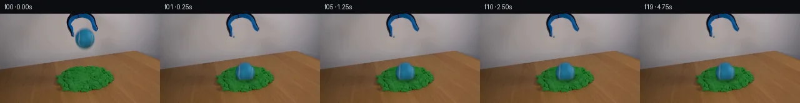

![首帧]()

Round 00
2026-11-04T20:33:56.265469+00:00像素候选变化代码 +219/−0inspection 更新
pixels ef649020dcb9a57a · code e876d093894bb416
查看本轮 generate.py 真实 diff
--- previous/generate.py
+++ current/generate.py
@@ -0,0 +1,219 @@
+from pathlib import Path
+import json
+import numpy as np
+import cv2
+from PIL import Image, ImageDraw
+from scipy.ndimage import gaussian_filter, distance_transform_edt
+from artifact_io import save
+
+ROOT = Path(__file__).resolve().parent
+SOURCE = np.array(Image.open(ROOT / 'first_frame.png').convert('RGB'))
+H, W = SOURCE.shape[:2]
+Y, X = np.mgrid[:H, :W].astype(np.float32)
+S = SOURCE.astype(np.float32)
+
+# Source-derived matte for the suspended implement. Its boundary is read from
+# color inside a manually observed outline; this is not an external mask.
+outline = np.zeros((H, W), np.uint8)
+cv2.fillPoly(outline, [np.array([(114,0),(142,0),(149,5),(153,16),
+ (157,25),(155,29),(150,27),(147,20),(145,12),(141,8),
+ (128,7),(119,10),(115,16),(117,23),(120,37),(116,39),
+ (112,31),(108,24),(106,17),(107,10)], np.int32)], 255)
+chroma = S[:,:,2] - S[:,:,0]
+tool_core = (outline > 0) & ((chroma > 19) | (S.mean(2) < 103))
+tool_mask = cv2.dilate(tool_core.astype(np.uint8), np.ones((3,3),np.uint8))
+tool_alpha = gaussian_filter(tool_mask.astype(np.float32), .43)
+
+# A soft silhouette retains the source tennis ball's fuzzy edge and seams.
+bx, by = 135.5, 39.6
+rho = np.sqrt(((X-bx)/15.4)**2 + ((Y-by)/16.3)**2)
+ball_support = (rho < 1.17) & (Y > 21)
+ball_core = ball_support & (rho < .91) & (chroma > 39)
+_, nearest = distance_transform_edt(~ball_core, return_indices=True)
+nearest_chroma = chroma[nearest[0], nearest[1]]
+# Foreground chroma supplies alpha in the narrow soft edge; keep the full
+# measured interior, including the darker lower hemisphere.
+ball_alpha = np.clip((chroma-2)/(np.maximum(nearest_chroma-2,25)),0,1)
+ball_alpha = np.where(rho < .87, 1., ball_alpha)
+ball_alpha *= np.clip((1.15-rho)/.13,0,1)
+ball_alpha *= ball_support
+ball_alpha = ball_alpha.astype(np.float32)
+
+# Restore only the wall previously hidden by ball and jaws.
+remove = ((rho < 1.30) | (cv2.dilate(tool_mask,np.ones((5,5),np.uint8)) > 0)).astype(np.uint8)*255
+BG = cv2.inpaint(SOURCE, remove, 7, cv2.INPAINT_TELEA).astype(np.float32)
+# Inpaint's local wall is denoised within its hole, without changing the scene.
+smooth = gaussian_filter(BG, (1.8,1.8,0))
+inner = gaussian_filter((remove>0).astype(np.float32),1.2)
+BG = BG*(1-inner[:,:,None]) + smooth*inner[:,:,None]
+
+# Recover unassociated object colors so gray wall halos do not travel onto sand.
+def recover(alpha):
+ a = np.maximum(alpha[:,:,None], .08)
+ col = np.clip((S-(1-alpha[:,:,None])*BG)/a,0,255)
+ col[alpha<.02] = 0
+ return col
+BALL = recover(ball_alpha)
+TOOL = recover(tool_alpha)
+
+def over(base, col, alpha):
+ return base*(1-alpha[:,:,None]) + col*alpha[:,:,None]
+
+def remap(a, mx, my):
+ return cv2.remap(a, mx.astype(np.float32), my.astype(np.float32),
+ cv2.INTER_LINEAR, borderMode=cv2.BORDER_CONSTANT)
+
+def tool_open(base, amount):
+ # Top is anchored; the two tips separate by about six pixels in total.
+ k=np.clip((Y-6)/29,0,1)**1.25
+ mx=X-amount*3.1*np.tanh((X-131)/7)*k
+ alpha=remap(tool_alpha,mx,Y)
+ colp=remap(TOOL*tool_alpha[:,:,None],mx,Y)
+ col=colp/np.maximum(alpha[:,:,None],1e-5)
+ return over(base,col,alpha)
+
+sand = ((S[:,:,1] > S[:,:,0]*1.3) & (S[:,:,1] > S[:,:,2]*1.3) & (Y>78)).astype(np.float32)
+sand_area=np.clip(gaussian_filter(cv2.dilate(sand,np.ones((3,3),np.uint8)),.6),0,1)
+cx, cy = 136., 101.
+dx, dy = X-cx, Y-cy
+r=np.sqrt(dx**2+(dy/.57)**2)
+ring=np.exp(-((r-18)/6.8)**2)
+local=np.clip((40-r)/10,0,1)
+# All texture and noise come from the observed mound or deterministic arithmetic.
+texture = (S[:,:,1]-gaussian_filter(S[:,:,1],1.7))/30
+rough = .36*np.sin(X*1.73+Y*2.15) + .25*np.cos(X*2.9-Y*.62)
+
+# Displaced sand fragments are very small cohesive pieces, with short flights.
+rng = np.random.default_rng(1601)
… diff truncated; 132 more lines …